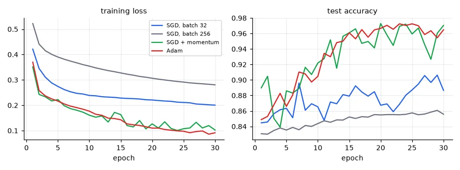
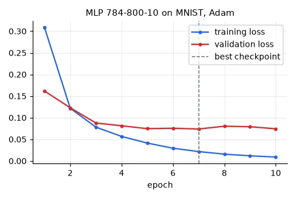

Why a framework#
Lesson 11 needed 20 lines of careful calculus for a two-layer network. A modern network has hundreds of layers of a dozen types. Frameworks give three things: tensors (NumPy-like arrays that can live on a GPU), automatic differentiation (the backward pass is derived for you), and building blocks (layers, losses, optimisers, data loaders). This course uses PyTorch; my original labs used Keras/TensorFlow, and every idea here translates one-to-one.
Tensors: shape, dtype, device#
device = torch.device("cuda" if torch.cuda.is_available() else "cpu")
a = torch.arange(12, dtype=torch.float32).reshape(3, 4) # (3, 4) float32 on the CPU
b = torch.from_numpy(np.ones(4, dtype=np.float32)) # shares memory with the NumPy array
c = a @ b # (3,) matrix-vector product
print(a.shape, a.dtype, a.device, "| a @ b =", c.tolist())
print("broadcasting: (3, 4) + (4,) ->", tuple((a + b).shape), "| (3, 1) * (1, 4) ->",
tuple((a[:, :1] * a[:1, :]).shape))
print("training on:", device)
torch.Size([3, 4]) torch.float32 cpu | a @ b = [6.0, 22.0, 38.0]
broadcasting: (3, 4) + (4,) -> (3, 4) | (3, 1) * (1, 4) -> (3, 4)
training on: cpu
Three attributes to keep in your head at every line:
- shape — most deep learning bugs are shape bugs. Write the expected shape as a comment next to every non-trivial tensor; I do it throughout the course.
- dtype — networks train in
float32(or lower); NumPy defaults tofloat64. Class labels forCrossEntropyLossmust beint64. - device — every tensor in an operation must be on the same device (
.to(device)). The code runs unchanged on CPU or GPU.
Is it faster?#
The UFRN class compared matrix products in NumPy and the framework on CPU and GPU:
for n in (256, 1024, 2048):
A = np.random.rand(n, n).astype(np.float32)
B = np.random.rand(n, n).astype(np.float32)
At, Bt = torch.from_numpy(A), torch.from_numpy(B)
At @ Bt # warm-up: the first call pays one-off costs
t0 = time.perf_counter()
for _ in range(5):
A @ B
t_np = (time.perf_counter() - t0) / 5
t0 = time.perf_counter()
for _ in range(5):
At @ Bt
if device.type == "cuda":
torch.cuda.synchronize() # GPU calls are asynchronous: wait before timing
t_pt = (time.perf_counter() - t0) / 5
print(f"{n:5d} x {n}: NumPy {1e3 * t_np:7.2f} ms | PyTorch CPU {1e3 * t_pt:7.2f} ms "
f"| {2 * n ** 3 / t_pt / 1e9:5.0f} GFLOP/s")
256 x 256: NumPy 3.87 ms | PyTorch CPU 1.56 ms | 22 GFLOP/s
1024 x 1024: NumPy 7.09 ms | PyTorch CPU 17.09 ms | 126 GFLOP/s
2048 x 2048: NumPy 45.53 ms | PyTorch CPU 65.47 ms | 262 GFLOP/s
On a CPU both call an optimised BLAS library, and neither is consistently faster (the numbers move with whatever else the machine is doing). The real gain is the GPU, typically 10–50× on large products. Two timing traps: the first call pays one-off initialisation costs (warm up first), and GPU calls are asynchronous — they return before the computation is done, so without torch.cuda.synchronize() you measure only the launch. (My version of this exercise had np.arrange and no loop over the sizes; it never ran.)
Autograd#
Mark parameters with requires_grad=True; every operation on them records itself in a graph; loss.backward() walks that graph backwards applying the chain rule — lesson 11's backward, generated automatically.
x = torch.tensor([[1.0, 2.0]]) # (1, 2) one sample
W = torch.tensor([[0.5], [-1.0]], requires_grad=True) # (2, 1) a parameter: track its gradient
bias = torch.tensor([0.1], requires_grad=True)
p = torch.sigmoid(x @ W + bias) # forward pass builds a graph of operations
loss = nn.functional.binary_cross_entropy(p, torch.tensor([[1.0]]))
loss.backward() # backward pass fills .grad of every leaf
print("p = %.4f | dL/dW = %s | by hand (p - y) x = %s"
% (p.item(), W.grad.ravel().tolist(), ((p.item() - 1) * x).ravel().tolist()))
p = 0.1978 | dL/dW = [-0.802183985710144, -1.604367971420288] | by hand (p - y) x = [-0.8021838665008545, -1.604367733001709]
The "prediction minus label, times input" of lesson 04, to seven digits.
Model, loss, optimiser, loop#
A model is an nn.Module; for a plain stack of layers nn.Sequential is enough. Hyper-parameters go in one config object, not scattered through the code, so every experiment is described by a single value you can print, log or save next to the results:
@dataclass
class Config:
hidden: int = 64
lr: float = 0.1
batch_size: int = 32
epochs: int = 30
optimizer: str = "sgd" # "sgd", "momentum" or "adam"
seed: int = 0
def make_mlp(n_in, hidden, n_out):
return nn.Sequential(nn.Linear(n_in, hidden), nn.ReLU(), nn.Linear(hidden, n_out))
def make_optimizer(name, params, lr):
if name == "sgd":
return torch.optim.SGD(params, lr=lr)
if name == "momentum":
return torch.optim.SGD(params, lr=lr, momentum=0.9)
if name == "adam":
return torch.optim.Adam(params, lr=lr)
raise ValueError(name)
The training loop is always the same five steps — forward, loss, zero_grad, backward, step — inside two loops (epochs, mini-batches), followed by an evaluation in eval() mode under torch.no_grad():
def fit(cfg, X, y, Xv, yv, loss_fn, n_out=1, patience=None):
"""The canonical PyTorch training loop. Returns the model and per-epoch (train loss, val loss, val acc).
With patience=k, stop when the validation loss has not improved for k epochs and
return the model with the best weights seen (early stopping + checkpointing)."""
torch.manual_seed(cfg.seed)
model = make_mlp(X.shape[1], cfg.hidden, n_out).to(device)
opt = make_optimizer(cfg.optimizer, model.parameters(), cfg.lr)
loader = DataLoader(TensorDataset(X, y), batch_size=cfg.batch_size, shuffle=True)
history, best_loss, best_state = [], float("inf"), None
for epoch in range(cfg.epochs):
model.train()
total = 0.0
for xb, yb in loader:
xb, yb = xb.to(device), yb.to(device)
out = model(xb).squeeze(-1) if n_out == 1 else model(xb) # (B,) logits or (B, 10)
loss = loss_fn(out, yb)
opt.zero_grad() # gradients accumulate by default: reset them
loss.backward() # backpropagation
opt.step() # parameter update
total += loss.item() * len(xb)
model.eval()
with torch.no_grad(): # no graph needed for evaluation
out = model(Xv.to(device))
out = out.squeeze(-1) if n_out == 1 else out
vloss = loss_fn(out, yv.to(device)).item()
pred = (out > 0).float() if n_out == 1 else out.argmax(1)
vacc = (pred.cpu() == yv).float().mean().item()
history.append((total / len(X), vloss, vacc))
if patience is not None:
if vloss < best_loss:
best_loss, best_state = vloss, copy.deepcopy(model.state_dict())
elif epoch - int(np.argmin([h[1] for h in history])) >= patience:
print(f"early stopping after epoch {epoch + 1}: no improvement for {patience} epochs")
break
if best_state is not None:
model.load_state_dict(best_state) # roll back to the best checkpoint
return model, np.array(history)
Two details matter. Gradients accumulate in .grad (useful for very large batches) so they must be zeroed at every step. And the losses take logits — the raw scores before the sigmoid/softmax: BCEWithLogitsLoss and CrossEntropyLoss apply the sigmoid/softmax internally in a numerically stable way (computing log(softmax(z)) naively overflows for large \(z\)).
Softmax twice
In my UFRN MNIST + Gradio exercise the Keras model already ended with a softmax layer, and the prediction function applied tf.nn.softmax again to its output. The predicted class didn't change (softmax preserves the order), so the app "worked" — but the "probabilities" it displayed were all squashed towards 10%. Decide where the softmax lives (in PyTorch: in the loss during training, explicitly at inference) and apply it once.
Optimisers#
The INSA lab compared optimisers, batch sizes and epochs on the mixture data of lesson 11:
bce = nn.BCEWithLogitsLoss() # sigmoid + binary cross-entropy in one numerically stable step
runs = {}
for name, cfg in {
"SGD, batch 32": Config(optimizer="sgd", lr=0.1),
"SGD, batch 256": Config(optimizer="sgd", lr=0.1, batch_size=256),
"SGD + momentum": Config(optimizer="momentum", lr=0.1),
"Adam": Config(optimizer="adam", lr=0.01),
}.items():
_, runs[name] = fit(cfg, X, y, Xt, yt, bce)
print(f"{name:15s}: test acc after 3 epochs {runs[name][2, 2]:.3f}, after 30 {runs[name][-1, 2]:.3f}")
SGD, batch 32 : test acc after 3 epochs 0.856, after 30 0.887
SGD, batch 256 : test acc after 3 epochs 0.835, after 30 0.856
SGD + momentum : test acc after 3 epochs 0.851, after 30 0.970
Adam : test acc after 3 epochs 0.868, after 30 0.965

- Batch size. With the same learning rate, batches of 256 make 8× fewer updates per epoch than batches of 32: smoother but slower progress per epoch.
- Momentum accumulates a velocity, \(\mathbf{v} \leftarrow 0.9\,\mathbf{v} - \eta\nabla J\), \(\theta \leftarrow \theta + \mathbf{v}\): consistent gradient directions add up, oscillating ones cancel — exactly the cure for the zig-zag in lesson 02's elongated valley.
- Adam keeps a running average of each parameter's gradient and of its square, and divides one by the square root of the other: every parameter gets its own step size. It is the robust default; well-tuned SGD + momentum often generalises as well or better on vision tasks.
The experiment that compared nothing
My Keras version looped over four configurations — but model.compile(optimizer="sgd", ...) was hard-coded inside the loop, so the "Adam" runs were SGD; and an SGD(learning_rate=0.1, momentum=0.9) object was created and never passed (the string "sgd" gives the default 0.01 without momentum). The written conclusions about Adam were explanations of noise. When an experiment varies a setting, print the setting from the object that is actually used (print(opt)).
The bug that costs 50 points of accuracy#
The lab's MLP on MNIST: 784 → 800 ReLU → 10, plain SGD. My Keras run reached a loss of 408 in the first epoch and 35% test accuracy. Here is the same thing in PyTorch, with and without dividing the pixels by 255:
x_train, y_train, x_test, y_test = U.load_mnist()
Xm = torch.from_numpy(x_train.reshape(-1, 784)).float() # (60000, 784) float32, values 0..255
ym = torch.from_numpy(y_train) # (60000,) int64 class indices
Xm_test = torch.from_numpy(x_test.reshape(-1, 784)).float()
ym_test = torch.from_numpy(y_test)
ce = nn.CrossEntropyLoss() # softmax + categorical cross-entropy, takes raw logits
cfg = Config(hidden=800, lr=0.01, batch_size=32, epochs=3)
for name, scale in (("raw pixels 0-255", 1.0), ("pixels / 255", 255.0)):
_, h = fit(cfg, Xm / scale, ym, Xm_test / scale, ym_test, ce, n_out=10)
print(f"{name:16s}: train loss per epoch {np.round(h[:, 0], 3).tolist()}, test acc {h[-1, 2]:.4f}")
raw pixels 0-255: train loss per epoch [8.736, 1.698, 1.573], test acc 0.5128
pixels / 255 : train loss per epoch [0.799, 0.364, 0.311], test acc 0.9200
The lab text said "scale all inputs to [0, 1]"; my code converted to float32 and forgot the division. With inputs up to 255, the first layer's pre-activations are ~255 times larger than the initialisation expects, the first gradient steps are enormous, many ReLUs die, and the network never recovers. Lesson 02 in its most expensive form: normalise the inputs. (My write-up blamed it on "multiple classes to predict".)
Early stopping and checkpoints#
Hold out a validation set, watch its loss after each epoch, and stop when it has not improved for a few epochs (the patience) — then roll back to the best weights:
perm = torch.randperm(60000)
tr, va = perm[:50000], perm[50000:] # hold out 10,000 training images for validation
Xs = Xm / 255.0
cfg = Config(hidden=800, optimizer="adam", lr=1e-3, batch_size=128, epochs=30)
model, curve = fit(cfg, Xs[tr], ym[tr], Xs[va], ym[va], ce, n_out=10, patience=3)
path = U.CACHE / "mlp_mnist_best.pt"
torch.save(model.state_dict(), path) # a checkpoint is just the dict of tensors
reloaded = make_mlp(784, cfg.hidden, 10)
reloaded.load_state_dict(torch.load(path))
reloaded.eval()
with torch.no_grad():
same = torch.equal(model(Xs[:1000]), reloaded(Xs[:1000]))
acc = (reloaded(Xm_test / 255.0).argmax(1) == ym_test).float().mean().item()
print("best validation loss %.4f at epoch %d | reloaded model identical: %s | test accuracy %.4f"
% (curve[:, 1].min(), curve[:, 1].argmin() + 1, same, acc))
early stopping after epoch 10: no improvement for 3 epochs
best validation loss 0.0738 at epoch 7 | reloaded model identical: True | test accuracy 0.9805

A checkpoint is the model's state_dict() — a dictionary of named tensors — saved with torch.save. To use it you rebuild the same architecture and load_state_dict. The equality test on 1,000 images is the check the lab asked for ("propose a way to verify the reloaded model is the same"): identical outputs, bit for bit. In a real project, save the optimiser's state_dict and the config too, so training can resume.
From 92% (3 epochs of SGD) to 98% (Adam, 7 epochs) with the same network. The next lesson gets to 99% with a network that knows it is looking at images.
Exercises#
- Add a learning-rate schedule (
torch.optim.lr_scheduler.CosineAnnealingLR) to the SGD runs on the mixture data. Does plain SGD catch up with momentum? - Move the model and data to the GPU if you have one (the code already does it through
device) and time one epoch on each device. - Write
fitso that it also saves the optimiser state, and resume an interrupted training run from the checkpoint. Check that the loss curve continues smoothly.